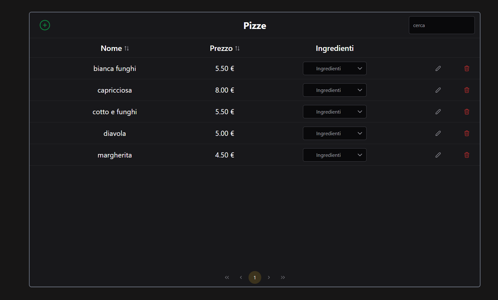

Gestionale
La nostra Ambiziosa idea di rivoluzionare e semplificare la gestione degli ordini, del menu e delle consegne
Home Personalizzata

Una Schermata Home semplice e intuitiva che ti permette di navigare velocemente tra i vari menu.
Gestione Prenotazioni
Gestisci comodamente le prenotazioni inserendo solo i dati necessari.
Tieni sempre sotto controllo gli orari disponibili e le informazioni necessarie a completare l'ordine.
E' possibile caricare le informazioni dei clienti abituali per velocizzare il processo di prenotazione.
E se un cliente ci ripensa e' sempre possibile caricare un ordine e modificarlo in un secondo momento.

Gestione Menu

E' possibile gestire il menu in modo semplice e veloce andando direttamente a modificare cio' che ti serve.
Inserire, modificare e cancellare i prodotti dal menu e' un gioco da ragazzi.
Storico Ordini

Lo storico ordini e' sempre a disposizione per tenere sotto controllo le vendite e i prodotti piu' richiesti. E' possibile caricare un ordine e modificarlo direttamente da qui.